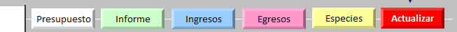
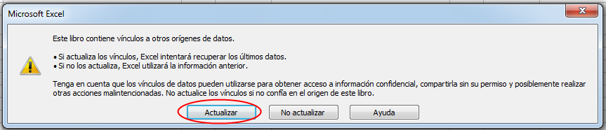
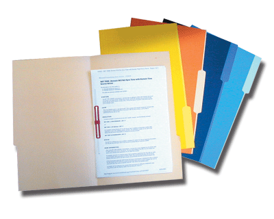

Resumen de Eventos
El objeto de este formato es presentar el consolidado de ingresos y egresos de un Evento.
• • •
Ingresar en el Panel de Control y sleccionar el botón Informe según la actividad

Importante: Es necesario que tengamos instalado MS Excel en nuestra computadora, para que todos los archivos del Sistema funcionen adecuadamente.

Al abrir nuestro archivo egresos.xls, este nos pedirá que confirmemos la ejecución de los Macros necesarios para que funciones el sistema.
Debemos pulsar donde dice Habilitar Macros.
Nota: Es
posible que no aparezca este mensaje, si la configuración de Excel está
ajustada para permitir todas las Macros, en este caso no hay ningún
problema.
Finalmente aparecerá una ventana advirtiendo que el archivo o libro,
está vinculado a otros archivos, lo cual es necesario para que funcione
el sistema.
En este caso debemos pulsar sobre el botón Actualizar, tal como lo muestra la imagen.

Datos Generales
Primero coloque la fecha del evento, el lugar y el número real de jóvenes y adultos que asistió al evento.
Los demás datos se cargan automáticamente de acuerdo a lo que haya intruducido en las demás hojas del sistema.

Ingresos
Esta sección se llena automáticamente con los datos cargados e la hojas de Ingresos y Donativos en Especies.

Egresos
En
esta sección se debe especificar en que se emplearon los donativos en
Especies ( si los hubo) lo demás se llena automáticamente con los datos
cargados e la hojas de Egresos.

Totalización
Al final se calculará de manera automática la diferencia entre lo que ingresó y lo que egresó, este número puede ser positivo, en cuyo caso se tiene un remanente de dinero; o negativo, indicando que hay un faltante.

Un evento siempre debe cerrar sus cuentas en 0, ya que de lo contrario quedaría ese dinero flotante, en tal caso si tenemos un remanente este debe considerarse como una "Cuenta por Pagar", y ser entregado a la tesorería del Grupo, Distrito o Región, según sea el caso.
Si hay un faltante, este deberá considerar una "Cuenta por Cobrar",
y ser cubierto por el ente supervisor. También se consideran cuentas
por cobrar, los pagos y donativos que no se hayan recibido a tiempo, lo
que deberá ser manejado por el ente supervisor, ya que una vez
terminado el evento su administración se cierra.

Reporte
Una vez cerrada la administración del evento, se debe hacer el reporte respectivo, que estará conformado por esta hoja de Resumen impresa, más las hojas de Ingresos, Egresos y Donativos en Especies, con los respectivos comprobantes.
Esto preferiblemente en una carpeta o sobre cerrado.
Ayudas
Para
acceder a este Instructivo, pulse sobre el
botón ? que está en la parte superior derecha.